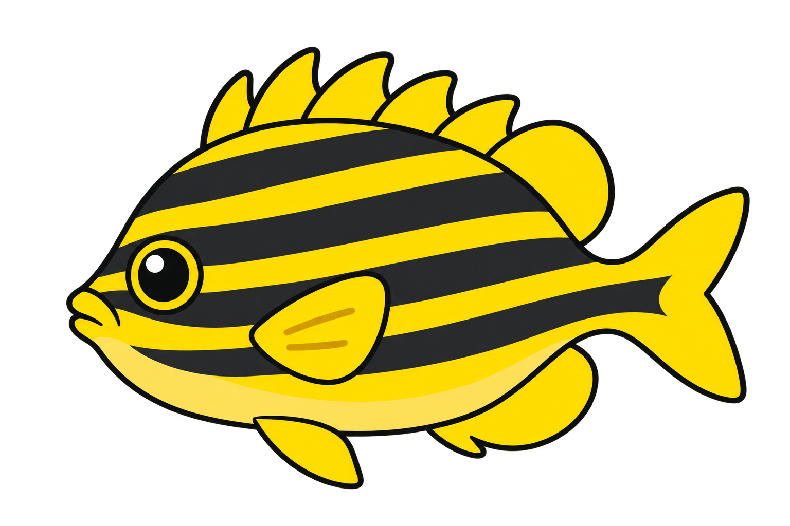

제주 · 선착장·해안
바다에서 범돔을 만나자!
아래쪽 바다 탐사 구역으로 가 보세요.

휴대폰을 가로로 돌리면 더 넓게 볼 수 있어요
왼쪽을 끌어 이동
3D 수족관을 열지 못했어요.Chrome에서 다시 열어 주세요.
물속: 왼쪽 조이스틱으로 헤엄치고 오른쪽 화면을 끌어 둘러봐요. 위아래를 보며 전진하면 수심이 바뀌어요. 입구의 붉은 고리와 줄로 돌아오면 귀환할 수 있어요.
문을 향해 1초간 계속 걸으면 출입해요. 가까이에서 ‘문 열기’를 눌러도 돼요. 구릉과 오솔길은 지금은 배경이에요. 전시된 수조는 가까이에서 짧게 눌러 관찰할 수도 있어요. 수집·입수·배치는 오른쪽 버튼으로 해요. 컴퓨터에서는 방향키 또는 WASD로 걸을 수 있어요.
진행은 이 기기의 브라우저에 저장돼요. 다른 기기와는 연동되지 않으며, 브라우저의 사이트 데이터를 지우면 기록도 지워져요.
검토 버전: 2026-10-16 · 관리동 데크·보름달물해파리
해파리 원본: Jellyfish · Poly by Google · CC BY 3.0. 보름달물해파리에 맞춰 형태·색상·움직임을 수정했어요.
장식을 고르고 동그란 자리를 눌러요
미리보기를 열지 못했어요. 취소한 뒤 다시 열어 주세요.
제주 돌과 바다풀을 하나씩 놓아 주세요.
수조 세 자리의 모양과 친구를 고를 수 있어요. 다른 자리에 전시 중인 친구는 먼저 관리동으로 돌려보내 주세요.
해안에서 만난 친구는 여기서 입수해요. 보관 중인 친구는 전시관의 빈 수조에 배치하거나 전시 편집에서 자리를 고를 수 있어요.
전시 중인 친구는 전시관에서 관찰해요. 범돔의 수조 꾸미기도 그대로 할 수 있어요. 관리동으로 돌아온 친구의 관찰·꾸미기 달성 기록은 남아요.
기록은 이 브라우저에 저장돼요. 다른 주소나 기기로 옮기려면 파일을 내보낸 뒤 새 게임에서 가져오세요.
예전 기록을 이어왔다면 개편 전 원본도 내보낼 수 있어요.
예전 사이트에서 파일을 꺼낼 수 없을 때 사용해요. 원본을 읽는 기능이 아니라, 직접 고른 달성 상태를 복원해요. 예전 버전에서 수조에 넣은 친구는 전시관 배치 완료로 고르세요.
장식은 현재 배치를 고르세요. 꾸미기 달성 뒤 장식을 치웠어도 달성 기록은 유지돼요. 위치는 안전한 시작점으로 옮겨요.